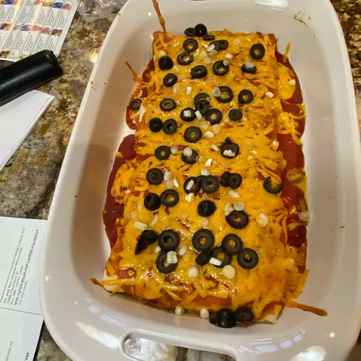

Enchiladas

Description
This chicken enchilada recipe is easy to make with tortillas, tender
chicken, and a deliciously cheesy sauce for a family-pleasing Mexican
meal.
This chicken enchilada recipe couldn’t be easier to make with simple
ingredients.
Ingredients
- 1 tablespoon olive oil, or as needed
- 4 skinless, boneless chicken breast halves
- 1 ¾ cups shredded Cheddar cheese, divided
- 8 (10 inch) flour tortillas
- 1 (12 ounce) jar taco sauce
Steps
- Slice Chicken
- Cook Chicken
- Wrap in tortillas with cheese
- Slather in sauce
- Add oil to pan and cook for a little while